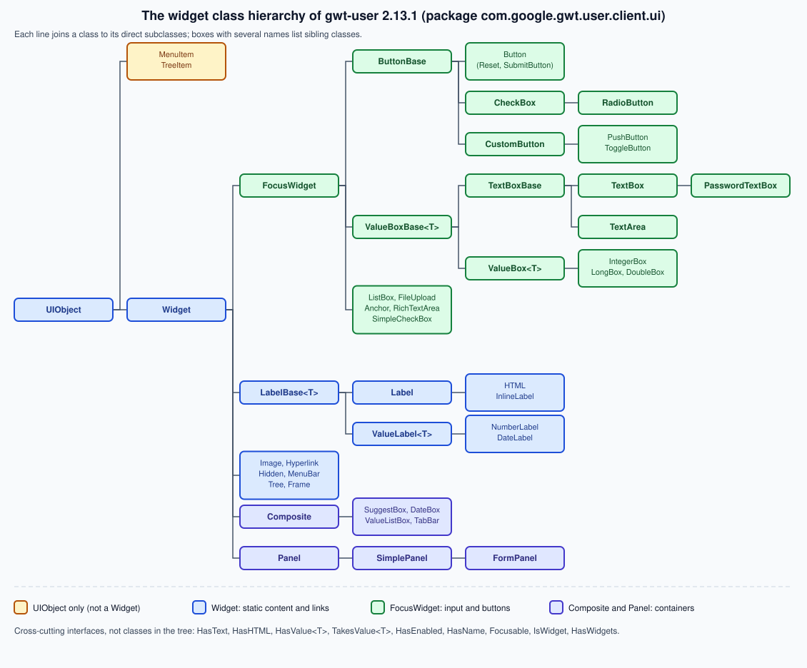

Widgets
|
This content was generated with the assistance of AI and should be verified against the official documentation before being relied on in production. The reference material consulted while preparing these pages is listed in the section bibliography. |
This page is written against GWT 2.13.1 (released 2026-06-19), gwt-maven-plugin 1.3.0 (net.ltgt.gwt.maven), JDK 21 running the compiler with -sourceLevel 17, the Jakarta Servlet 6 server of the Bookshelf scenario and the gwt-user 2.13.1 sources, checked on 2026-10-08.
It is mostly client knowledge: every widget is Java that the GWT compiler translates to JavaScript and that builds DOM elements inside the browser.
The one server-side piece is the Jakarta servlet that receives a form upload in the forms section, and the build needs nothing beyond the com.google.gwt.user.User module that every GWT application already inherits (the Bookshelf client also inherits the Clean theme).
Every DOM string, event order and error message below was produced by compiling a probe module with the 2.13.1 compiler (-strict, two permutations, about 224 KB of JavaScript per permutation for the whole gallery) and loading it in headless Chrome 155; the form section also ran against a small multipart server.
Output is quoted as it appeared, and the Bookshelf BookForm at the end compiled and ran in the same probe.
The widget model
A GWT user interface is a tree of Java objects. Each object is a widget: it owns exactly one root DOM element, offers a typed Java API for that element, and receives the browser events that happen on it. Panels are widgets that contain other widgets, so the object tree and the element tree have the same shape. The Developer Guide describes the same arrangement as widgets that are contained within panels, widgets defining the input and output with the user, and panels controlling placement.
Source: GWT Developer Guide — Widgets
Because widgets are plain Java objects, you use them with the normal Java tools: constructors, generics, inheritance, field initialisers and lambdas.
The compiler removes widget classes and methods that the application never reaches, so a page that uses a Label and a Button does not pay for DateBox or RichTextArea.
The cost shows up in the probe: the application with the whole gallery compiled to about 224 KB per permutation, which is why the Code Splitting page matters for large applications.
The class hierarchy
The classes live in the package com.google.gwt.user.client.ui of gwt-user.
They fall into a few families, and the family tells you which methods you inherit.

The figure is read from the source of the 2.13.1 tag. A few consequences are worth knowing before the gallery:
-
UIObjectis the root. It owns the element and everything that is about presentation:getElement(), the style-name methods,setSize,setWidth,setHeight,setVisible,setTitle,getOffsetWidth,ensureDebugId -
Widgetadds the event listener, the attach and detach lifecycle, handler registration (addDomHandler,addHandler,addAttachHandler), the parent link andremoveFromParent() -
MenuItemandTreeItemextendUIObjectonly. They are not widgets: you cannot add one to a panel, and you create them throughMenuBarandTree -
FocusWidgetis the base of everything that can take keyboard focus and click, mouse, key, focus, blur, drag and touch handlers:ButtonBase,ListBox,FileUpload,Anchor,RichTextArea,SimpleCheckBoxand, throughValueBoxBase, every text box -
Compositeis the base class for widgets built out of other widgets, and the superclass ofSuggestBox,DateBox,ValueListBoxandTabBar; the Custom Widgets & Composites page builds on it -
Panelis the base of the containers; the Panels & Layout page coversFlowPanel,SimplePanel, the layout panels and the others, and this page uses them only as places to put widgets -
interfaces cut across the tree:
HasText,HasHTML,HasValue<T>,TakesValue<T>,HasEnabled,HasName,Focusable,HasWidgets,IsWidget
Source: Javadoc — Widget
Widgets are Java objects around DOM elements
The quickest way to see what a widget really is: build one and print its element.
The probe below creates the widgets of the gallery and logs getElement().getString() (the element serialised as HTML).
static void show(String name, Widget w) {
log(name + " -> " + w.getElement().getString());
}
show("Label", new Label("Dune"));
show("InlineLabel", new InlineLabel("Dune"));
show("HTML", new HTML(SafeHtmlUtils.fromSafeConstant("<b>Dune</b>")));
show("Button", new Button("Save"));
show("TextBox", new TextBox());
show("PasswordTextBox", new PasswordTextBox());
show("TextArea", new TextArea());
show("CheckBox", new CheckBox("Available"));
show("RadioButton", new RadioButton("format", "Hardcover"));
ListBox lb = new ListBox();
lb.addItem("Novel", "NOVEL");
lb.addItem("Essay", "ESSAY");
show("ListBox", lb);
show("Hyperlink", new Hyperlink("Catalog", "catalog"));
show("Anchor", new Anchor("GWT", "https://www.gwtproject.org/"));
show("Image", new Image("cover.png"));
show("FileUpload", new FileUpload());
show("Hidden", new Hidden("xsrf", "token-placeholder"));Source: Javadoc — UIObject
| Widget | Root element as logged | Default style name |
|---|---|---|
|
|
|
|
|
|
|
|
|
|
|
|
|
|
|
|
|
|
|
|
|
|
|
none |
|
|
|
|
|
|
|
|
|
|
|
|
|
|
|
|
|
|
|
|
|
|
|
none |
|
|
|
|
|
|
Two details in the table matter in practice.
First, IntegerBox, DoubleBox and LongBox (and Hidden) have no default style name: a theme rule written for .gwt-TextBox does not reach a number box, so give it a name of your own (the Bookshelf form below uses bookshelf-number).
Second, a CheckBox or RadioButton is a span that wraps an input and a label with a generated gwt-uid-N id, so the click target is the label as well as the box.
A PushButton and a ToggleButton are different again: they are div elements with role="button" that contain a hidden one-pixel input (used to take focus) and, once the widget is attached, a div with the class html-face that holds the current face.
Logged after attaching them to the page:
PushButton attached -> <div tabindex="0" class="gwt-PushButton gwt-PushButton-up" role="button" aria-pressed="false"><input.../><div class="html-face">Save</div></div>
ToggleButton down -> <div tabindex="0" class="gwt-ToggleButton gwt-ToggleButton-down" role="button" aria-pressed="true"><input.../><div class="html-face">Hide</div></div> value=trueThe face is built when the widget attaches (CustomButton.onAttach calls its setup first), which is why a PushButton serialised before it is attached shows only the hidden input and no text.
Source: Javadoc — CustomButton
Widget, IsWidget and wrapping existing elements
IsWidget is a one-method interface (asWidget()) implemented by Widget.
Panels accept IsWidget in their add methods, so a presenter’s view interface can extend IsWidget without exposing a widget class, and Widget.asWidgetOrNull(IsWidget) is the null-safe way to unwrap one.
The MVP, Activities & Places page uses that to keep views testable.
Most widget classes also have a static wrap(Element) method (Label.wrap, Button.wrap, FileUpload.wrap, Anchor.wrap and so on) that builds the widget around an element that is already in the page, which is how you progressively enhance server-rendered markup.
The element must already be attached to the document (the method asserts it), the wrapper is marked attached immediately, and Label.wrap registers it with RootPanel.detachOnWindowClose, so call removeFromParent() when you remove the element yourself.
SubmitButton.wrap additionally asserts that the element is a button of type submit.
RootPanel: where every widget ends up
A widget is only visible once it is attached to the document, and every attached widget is, through a chain of parents, a descendant of a RootPanel.
RootPanel is the one panel you never construct: you ask for it, and it wraps an element of the host page.
RootPanel body = RootPanel.get(); // wraps <body>
RootPanel slot = RootPanel.get("app"); // wraps <div id="app">, or returns null
if (slot != null) {
slot.add(new Label("Bookshelf"));
}Source: Javadoc — RootPanel
-
RootPanel.get()returns the default root panel, which wraps thebodyelement and lays its children out in natural HTML order -
RootPanel.get(id)wraps the element with that id and caches the panel for later calls, and returnsnullwhen the host page has no such element (see the pitfalls) -
RootPanelextendsAbsolutePanel, so it can also place a child at a pixel position -
applications built on layout panels use
RootLayoutPanelinstead, which gives its single child the whole viewport; that is covered with the layout panels -
RootPanel.detachOnWindowClose(Widget)andRootPanel.detachNow(Widget)are@Deprecatedsince 2.12.0, because they depend on the browserunloadevent; remove a widget withremoveFromParent()when you are done with it
Attach and detach
A widget has two states that matter: attached (it is part of the document through an attached parent, so its element is in the page and receives events) and detached.
isAttached() tells you which.
The transitions are driven by the parent, not by your code.
The order was measured with a label that logs from each hook, inside a panel that is added to and removed from the RootPanel:
static class Tracing extends Label {
final String n;
Tracing(String n) { super(n); this.n = n; }
@Override protected void onAttach() { log(n + ".onAttach (start)"); super.onAttach(); log(n + ".onAttach (end)"); }
@Override protected void onLoad() { log(n + ".onLoad"); }
@Override protected void onUnload() { log(n + ".onUnload"); }
@Override protected void onDetach() { log(n + ".onDetach (start)"); super.onDetach(); log(n + ".onDetach (end)"); }
}
Box box = new Box("box"); // a FlowPanel that logs onLoad and onUnload
Tracing child = new Tracing("child");
child.addAttachHandler(e -> log("AttachEvent attached=" + e.isAttached()));
box.add(child); // box is detached: nothing happens yet
RootPanel.get().add(box); // attach
box.remove(child); // detach the child only
RootPanel.get().remove(box);Source: Javadoc — Widget.onAttach
new Label: isAttached=false parent=undefined
added to detached box: child.isAttached=false
RootPanel.get().add(box)
child.onAttach (start)
child.onLoad
AttachEvent attached=true
child.onAttach (end)
box.onLoad
child.isAttached=true child.getParent()==box:true
box.remove(child)
child.onDetach (start)
child.onUnload
AttachEvent attached=false
child.onDetach (end)
child.isAttached=false parent=null
RootPanel.get().remove(box)
box.onUnload
element still usable after detach: childThe numbers to remember: onLoad runs after the widget and all its children are attached, so a panel’s onLoad comes after its children’s; onUnload runs before anything is torn down.
A second run with three nested panels (outer, inner, leaf) showed attach order leaf, inner, outer and detach order outer, inner, leaf, in other words children load first and unload last.
A widget created with new Label reports getParent() as undefined (a JavaScript quirk of an uninitialised field in this build) and isAttached() as false; after remove the parent is null.
The element keeps working after detaching, so you can re-add the same widget later.
| Hook | When it runs | What to do in it |
|---|---|---|
|
Start of the attach; throws |
Do not override. If you must, call |
|
After the widget and its children are attached |
Start timers, register handlers on global sources ( |
|
First step of the detach, before children detach |
Undo everything |
|
The whole detach, including |
Do not override; call |
|
Fires an |
Observe a widget you do not subclass |
Source: Javadoc — Widget
The page on DOM and Elemental2 shows what happens to registrations that outlive their widget (see DOM & Elemental2), and the Custom Widgets & Composites page builds widgets that override these hooks correctly.
Parents and ownership
A widget has at most one parent.
getParent() returns it, removeFromParent() removes the widget from whatever panel holds it, and a panel’s add moves a widget that already has another parent.
The probe moved a label between two panels:
FlowPanel a = new FlowPanel();
FlowPanel b = new FlowPanel();
Label l = new Label("moved");
a.add(l);
b.add(l); // a.getWidgetCount() is now 0 and l.getParent() == bTwo further rules came out of the probe as exceptions:
-
a
SimplePanel(and every panel with a single slot) accepts one child: the secondaddthrowsIllegalStateException: SimplePanel can only contain one child widget -
the widget inside a
Compositehas the composite as its parent, not a panel, soinner.removeFromParent()throwsIllegalStateException: This widget's parent does not implement HasWidgets; remove the composite instead
Source: Javadoc — Composite
The widget gallery by purpose
The official Widget Gallery page lists the widgets and panels of the library with a picture of each, and sends you to the Showcase sample for code. Its list is short (Button, PushButton, RadioButton, CheckBox, DatePicker, ToggleButton, TextBox, PasswordTextBox, TextArea, Hyperlink, ListBox, CellList, MenuBar, Tree, CellTree, SuggestBox, RichTextArea, FlexTable, Grid, CellTable, CellBrowser, TabBar, DialogBox), and it carries no API and no code (the code is in the Showcase sample). This page organises the same material by what the user does with the widget, adds the classes the gallery leaves out and gives the API that matters for each.
Text: Label, InlineLabel, HTML and InlineHTML
A Label shows plain text in a div; an InlineLabel shows it in a span; HTML and InlineHTML show markup.
HTML extends Label, so everything that works on a label works on it, and the difference is only whether the string is treated as text or markup.
Label title = new Label("Dune");
title.setWordWrap(false);
title.addClickHandler(event -> status.setText("Opened"));
HTML blurb = new HTML(
new SafeHtmlBuilder()
.appendHtmlConstant("<em>")
.appendEscaped("Dune <1965>")
.appendHtmlConstant("</em>")
.toSafeHtml());Source: GWT Developer Guide — Safe HTML
The probe logged <div class="gwt-HTML"><em>Dune <1965></em></div> for the HTML above: the constant tags survived and the user-visible text was escaped.
-
LabelimplementsHasText,HasClickHandlers,HasDoubleClickHandlers, every mouse, drag, gesture and touch handler interface, andHasWordWrap,HasDirection -
HTMLimplementsHasHTML; itssetHTML(SafeHtml)overloads are the safe ones, and theStringoverloads are annotated@IsSafeHtmlso that the SafeHtml checker (see SafeHtml & XSS) can flag a call that passes an untrusted string -
Label.setTextis the right call for any data that came from a user or a server: the probe fed the string<b>Dune</b>to both widgets and got<b>Dune</b>in theLabeland<b>Dune</b>(live markup) in theHTML
Buttons: Button, PushButton, ToggleButton and the form buttons
| Widget | What it is | Notes |
|---|---|---|
|
A native |
|
|
A |
Style |
|
A |
Style |
|
A styled |
Styles |
|
A |
|
|
The abstract base of the two above |
Subclass it for your own face logic |
Button save = new Button("Save");
save.setEnabled(false);
save.setTabIndex(3);
save.setAccessKey('s');
ToggleButton toggle = new ToggleButton("Show", "Hide"); // up text, down text
toggle.setDown(true);
boolean down = toggle.getValue(); // trueSource: Javadoc — ButtonBase
The logged DOM for the disabled button was <button type="button" class="gwt-Button" disabled="">Save</button>, and after setTabIndex(3) and setAccessKey('s') it gained tabindex="3" accesskey="s".
Every FocusWidget supports that trio, plus setFocus(true) and isEnabled().
For the click itself use addClickHandler; the listener-era ClickListener is @Deprecated.
Text input and value boxes
All text boxes derive from ValueBoxBase<T>.
That class turns the string in the element’s value property into a T with a Parser<T> and back with a Renderer<T>, which is why IntegerBox and TextBox share one API.
| Widget | Value type | Notes |
|---|---|---|
|
|
|
|
|
A |
|
|
|
|
|
Extend |
|
any |
Subclass it for your own type: its constructor is |
|
|
A |
|
|
A |
|
HTML |
An |
TextBox isbn = new TextBox();
isbn.setMaxLength(13);
isbn.setVisibleLength(14);
isbn.getElement().setAttribute("placeholder", "ISBN");
TextArea notes = new TextArea();
notes.setVisibleLines(4);
notes.setCharacterWidth(40);Source: Javadoc — ValueBoxBase
The logged DOM was <input type="text" class="gwt-TextBox" maxlength="13" size="14" placeholder="ISBN"> and <textarea class="gwt-TextArea" rows="4" cols="40"></textarea>.
TextBox has no setPlaceholder, so the attribute goes through the element, which is the normal escape hatch (see DOM & Elemental2).
TextBox fires its ValueChangeEvent when the browser fires change (after the user edits it and leaves the field or presses Enter; the box registers a ChangeHandler that calls ValueChangeEvent.fire with the parsed value); use addKeyUpHandler when you need to react to each keystroke.
Number boxes
A number box shows a string, so the question is which conversion is used. The probe produced these results:
IntegerBox year = new IntegerBox();
year.setText("19x4");
year.getValue(); // null: parse failed
year.getValueOrThrow(); // throws java.text.ParseException, message "19x4"
year.setText("");
year.getValue(); // null: empty field
year.setValue(1965, true);
year.getText(); // "1,965"
DoubleBox price = new DoubleBox();
price.setValue(12.5);
price.getText(); // "12.5"Source: Javadoc — IntegerBox
-
getValue()returnsnullfor an empty field and for text that does not parse, so usegetValueOrThrow()when you must tell them apart -
the
ParseExceptionmessage is the offending text, not a sentence for the user: show your own message -
the default renderer formats with the locale’s number format, so
1965renders as1,965(with the default locale); a year or an id is better handled with aValueBox<Integer>that uses your ownRendererandParser, or aTextBoxandInteger.parseInt
SuggestBox, DateBox and RichTextArea
MultiWordSuggestOracle authors = new MultiWordSuggestOracle();
authors.add("Frank Herbert");
authors.add("Ursula K. Le Guin");
authors.add("Isaac Asimov");
SuggestBox author = new SuggestBox(authors);
author.addSelectionHandler(e -> log("selected " + e.getSelectedItem().getReplacementString()));
DateBox published = new DateBox();
published.setFormat(new DateBox.DefaultFormat(DateTimeFormat.getFormat("yyyy-MM-dd")));
published.addValueChangeHandler(e -> log("date " + e.getValue()));Source: Javadoc — DateBox
-
MultiWordSuggestOraclekeeps the suggestions in the browser and matches words; for server-side suggestions, subclassSuggestOracleand answerrequestSuggestions(Request, Callback)asynchronously -
SuggestBoximplementsHasTextandHasValue<String>; the popup is a separate element, and the oracle’s display strings are treated as HTML only whenisDisplayStringHTML()returns true -
DateBoxis aHasValue<Date>; the value is parsed from the text box through theFormat, andDateBox.DefaultFormattakes thecom.google.gwt.i18n.client.DateTimeFormat(thesharedclass of the same name does not fit) -
DateBox.getValue()parsed1965-08-01from the text before the field lost focus: the box parses on demand, so the value is available as soon as the text is typed;getDatePicker()andgetTextBox()give access to the parts -
RichTextAreacan format only when it is attached, visible and focused:getFormatter()returnsnullwhen the browser has no rich-text support, andBasicFormatterandExtendedFormatter(andgetBasicFormatter(),getExtendedFormatter()) are@Deprecated; usegetFormatter(); the probe attached an editor, calledsetHTML("<b>Hello</b>")and read the same string back fromgetHTML()in the same call; register anInitializeHandler(addInitializeHandler) when you need to know that the editor has finished initialising
The rich text content is HTML supplied by the user, so treat it as untrusted wherever you show it (see the security notes).
Choices: CheckBox, RadioButton, ListBox and friends
| Widget | Value | Notes |
|---|---|---|
|
|
|
|
|
A bare |
|
|
One |
|
|
The bare variant; style |
|
not a |
|
|
|
A typed drop-down: you give it a |
|
|
See the buttons |
RadioButton hard = new RadioButton("format", "Hardcover");
RadioButton soft = new RadioButton("format", "Paperback");
hard.setValue(true);
soft.setValue(true); // hard.getValue() is now false
ListBox genre = new ListBox();
genre.addItem("Novel", "NOVEL");
genre.addItem("Essay", "ESSAY");
genre.setSelectedIndex(1);
String code = genre.getSelectedValue(); // "ESSAY"
ListBox tags = new ListBox(true); // multiple selection
tags.setVisibleItemCount(3);
tags.addItem("Classic");
tags.addItem("Sci-fi");
tags.addItem("Prize winner");
tags.setItemSelected(0, true);
tags.setItemSelected(2, true); // iterate with isItemSelected(i)
ValueListBox<String> format = new ValueListBox<>(new AbstractRenderer<String>() {
@Override public String render(String o) { return o == null ? "" : o.toUpperCase(); }
});
format.setAcceptableValues(Arrays.asList("novel", "essay"));
format.setValue("essay", true);Source: Javadoc — ListBox
The probe confirmed the group behaviour (after the second setValue(true) the output was hard=false soft=true) and that an empty ListBox reports getSelectedIndex() as -1 and getSelectedValue() as null.
A multi-select ListBox reports the first selected index from getSelectedIndex() (0 in the probe), so you must loop over isItemSelected(i) to read all of them.
ValueListBox is the modern choice for an enum or domain object, because you never convert from an index back to a value yourself.
Radio buttons only group inside one document by name, and a RadioButton.setName(String) call replaces the underlying input element (the Javadoc says changing the name alone breaks grouping), so set the name in the constructor.
Navigation: Hyperlink, Anchor, MenuBar, Tree and TabBar
Hyperlink catalog = new Hyperlink("Catalog", "catalog"); // <a href="#catalog">
Anchor docs = new Anchor(SafeHtmlUtils.fromString("Docs"),
UriUtils.fromString("https://www.gwtproject.org/"), "_blank"); // external link
MenuBar bar = new MenuBar();
bar.addItem("Open", () -> status.setText("Open"));
MenuBar file = new MenuBar(true); // vertical popup menu
file.addItem("Exit", () -> Window.alert("bye"));
bar.addItem("File", file);
Tree genres = new Tree();
TreeItem root = genres.addTextItem("Genres");
root.addTextItem("Novel");Source: Javadoc — MenuBar
-
Hyperlinkrenders an anchor whosehrefis#tokenand, when clicked, creates a new history frame (History.newItem) without reloading the page; it navigates inside the application and is the building block of the history mechanism (see History & Navigation and MVP, Activities & Places) -
Anchoris a plainaelement that extendsFocusWidget; with nohrefit usesjavascript:;, the logged DOM fornew Anchor("x")was<a class="gwt-Anchor" href="javascript:;">x</a>; use it for external links and for click targets styled as links -
MenuBarrenders atableoftd.gwt-MenuItemcells withrole="menubar";addItem(String, ScheduledCommand)takes a lambda, andaddItem(String, MenuBar)creates a submenu;addSeparator()adds a separator;MenuItemis aUIObject, not a widget -
Treebuilds nestedTreeItem`s; `addTextItem(String)is the safe way to add a label, andaddItem(String)is@Deprecatedsince 2.5.0 because it treats its argument as HTML;addItem(SafeHtml)andaddItem(Widget)exist for rich items -
TabBaris a row of tabs (addTab(String),selectTab(int),getSelectedTab(),getTabCount()), and the probe selected tab1of2; the tab panels that show content under it are on the Panels & Layout page
Images
Image shows a picture, optionally one sprite out of a bigger image, and it fires load and error events.
Image cover = new Image("covers/dune.png");
cover.setAltText("Cover of Dune");
cover.setPixelSize(120, 180);
cover.addLoadHandler(e -> log("cover loaded"));
cover.addErrorHandler(e -> log("cover failed to load"));
Image.prefetch("covers/dune-large.png"); // warm the browser cacheSource: GWT FAQ — UI
The logged DOM was <img src="covers/dune.png" class="gwt-Image" alt="Cover of Dune" style="width: 120px; height: 180px;">, and the missing file produced the error handler’s line cover failed to load.
Image.prefetch(String) is the technique the UI FAQ recommends for background and border images that would otherwise load late on first use.
setAltText is how an image gets an accessible name; give every informative image one, and use ClientBundle image resources (see ClientBundle & Images) rather than the ImageBundle of old GWT versions, which is @Deprecated.
For Image(String url), a relative URL resolves against the host page, not against the compiled module directory.
Files and frames: FileUpload, Hidden, Frame and NamedFrame
These are the widgets of classic HTML forms; they only make sense next to FormPanel, so the next sections cover them together.
Frame wraps an iframe (a Widget that fires load events), and NamedFrame is a Frame with a name, which a form can target.
Widgets documented on other pages
The Widget Gallery includes widgets that belong to a larger topic. They are listed here so that nothing in the gallery is missing from this guide.
| Widget | Where |
|---|---|
|
The Panels & Layout page (popups are panels attached to the page, not to a parent widget) |
|
The Panels & Layout page |
|
The Panels & Layout page |
|
The Cell Widgets page |
|
The |
Value widgets: HasValue and TakesValue
Two small interfaces give widgets a common way to hold a value.
public interface TakesValue<V> {
void setValue(V value);
V getValue();
}
public interface HasValue<T> extends TakesValue<T>, HasValueChangeHandlers<T> {
T getValue();
void setValue(T value);
void setValue(T value, boolean fireEvents);
}Source: Javadoc — HasValue
-
TakesValue<V>(incom.google.gwt.user.client) is the bare "has a value" contract.Hiddenimplements it (aStringvalue, a name and no events), and so doesValueLabel<T>, so a read-only display widget (NumberLabel,DateLabel) and an input widget can both be driven through the same two methods -
HasValue<T>adds theValueChangeEventfor input widgets:TextBox, the number boxes,CheckBox,RadioButton,SimpleCheckBox,ToggleButton,ValueListBox,DateBoxandSuggestBox;RichTextAreais not one (it implementsHasHTML), and neither isListBox -
HasConstrainedValue<T>extendsHasValue<T>withsetAcceptableValues(Collection<T>)(ValueListBox,ValuePicker) -
the Editor framework adapts these types to bean properties through
asEditor(); that is covered on the Editors page
The behaviour of setValue(value, fireEvents) was measured on a TextBox and a CheckBox with a handler attached:
TextBox title = new TextBox();
title.addValueChangeHandler(e -> log("ValueChangeEvent title -> " + e.getValue()));
title.setValue("Dune"); // silent
title.setValue("Dune", true); // same value: no event
title.setValue("Emma", true); // event: "ValueChangeEvent title -> Emma"
CheckBox avail = new CheckBox("Available");
avail.addValueChangeHandler(e -> log("ValueChangeEvent avail -> " + e.getValue()));
avail.setValue(true, true); // event
avail.setValue(true, true); // no event: the value did not changeSource: Javadoc — ValueChangeEvent
title.setValue("Dune")
title.setValue("Dune", true) (same value)
title.setValue("Emma", true)
ValueChangeEvent title -> Emma
title.getText()=Emma getValue()=Emma
ValueChangeEvent avail -> true
avail.getValue()=true| Call | Effect |
|---|---|
|
Changes the widget, fires nothing (the same as |
|
Fires a |
User edits |
Fire the event when the browser reports the change: a check box or radio button on click, a text box on |
|
Parses the text on every call; |
An application usually calls setValue(value) while populating a form (no events, no loops) and setValue(value, true) only when a handler must react to a programmatic change.
Forms: FormPanel, FileUpload, Hidden and NamedFrame
GWT applications normally talk to the server with RPC, a JSON request or fetch (separate pages), and none of those can upload a file.
A browser only uploads a file through a form submission, so GWT offers FormPanel: a panel that is an HTML form element and submits through a hidden iframe, so that the page does not reload.
What FormPanel submits
FormPanel extends SimplePanel (one child, usually a panel that holds the fields).
The Javadoc lists the widgets whose values it submits when they are inside it: TextBox, PasswordTextBox, RadioButton, SimpleRadioButton, CheckBox, SimpleCheckBox, TextArea, ListBox, FileUpload and Hidden.
They are the widgets that implement HasName, and a field without a name is not submitted.
final FormPanel form = new FormPanel();
form.setAction("upload");
form.setMethod(FormPanel.METHOD_POST);
form.setEncoding(FormPanel.ENCODING_MULTIPART);
TextBox title = new TextBox();
title.setName("title");
TextBox note = new TextBox(); // no name on purpose
ListBox genre = new ListBox();
genre.setName("genre");
genre.addItem("Novel", "NOVEL");
genre.addItem("Essay", "ESSAY");
CheckBox avail = new CheckBox("Available");
avail.setName("available");
avail.setFormValue("yes");
avail.setValue(true);
RadioButton hard = new RadioButton("format", "Hardcover");
hard.setFormValue("HARDCOVER");
RadioButton soft = new RadioButton("format", "Paperback");
soft.setFormValue("PAPERBACK");
soft.setValue(true);
FileUpload cover = new FileUpload();
cover.setName("cover");
Hidden xsrf = new Hidden("xsrf", "token-placeholder");
VerticalPanel fields = new VerticalPanel();
fields.add(title);
fields.add(note);
fields.add(genre);
fields.add(avail);
fields.add(hard);
fields.add(soft);
fields.add(cover);
fields.add(xsrf);
form.setWidget(fields);
form.addSubmitHandler(e -> log("SubmitEvent canceled=" + e.isCanceled()));
form.addSubmitCompleteHandler(e -> log("SubmitCompleteEvent results=" + e.getResults()));
RootPanel.get("app").add(form);
form.submit();Source: Javadoc — FormPanel
The form was submitted to a small multipart server that lists the fields it received. The DOM that the widgets produced and the server’s view of the request:
form -> <form target="FormPanel_widgetsdemo_1" action="upload" method="post" enctype="multipart/form-data"><table role="presenta...
action=http://127.0.0.1:18241/upload method=post encoding=multipart/form-data target=FormPanel_widgetsdemo_1
cover -> <input type="file" class="gwt-FileUpload" name="cover">
hard -> <span class="gwt-RadioButton"><input type="radio" name="format" value="HARDCOVER" id="gwt-uid-12" tabindex="0"><label for="gwt-uid-12">Hardcover</label></span>
soft -> <span class="gwt-RadioButton"><input type="radio" name="format" value="PAPERBACK" id="gwt-uid-13" tabindex="0" checked=""><label for="gwt-uid-13">Paperback</label></span>
form.submit()
SubmitEvent canceled=false
SubmitCompleteEvent results=<pre>multipart/form-data|title=Dune|genre=NOVEL|available=yes|format=PAPERBACK|cover=|xsrf=token-placeholder</pre>The server saw title, genre, available, format, cover and xsrf, and nothing for the unnamed note box.
An unchecked CheckBox is not sent at all (that is standard HTML behaviour), and setFormValue sets the value that a checked CheckBox or RadioButton sends (the default, on, is rarely what the server wants).
The cover field arrived empty because the probe chose no file.
Method, encoding, target and the hidden iframe
-
setMethod(FormPanel.METHOD_POST)orMETHOD_GET(the constants are"post"and"get") -
setEncoding(FormPanel.ENCODING_MULTIPART)(multipart/form-data, required forFileUpload) orENCODING_URLENCODED(application/x-www-form-urlencoded, the default) -
setAction(String)takes the URL; there is also aSafeUrioverload, andgetAction()returns the resolved absolute URL (the probe printedhttp://127.0.0.1:18241/uploadforupload) -
new FormPanel()creates its own hiddeniframenamed likeFormPanel_<module>_<n>when the panel attaches, appends it tobody, and removes it on detach; the probe found two such frames with two attached forms -
new FormPanel(NamedFrame)andnew FormPanel(String target)submit into an existing frame (or replace the current page when the target isnull) and do not fire theSubmitCompleteEvent; the target frame must be added to a panel by you -
reset()clears the form, and aResetButtonorSubmitButtoninside the form does the same through the browser
The FormPanel must stay attached until the submission completes, or the completion notification is lost (the Javadoc says so for submit()).
Events: SubmitEvent and SubmitCompleteEvent
-
addSubmitHandler(FormPanel.SubmitHandler)is called before the browser submits; callevent.cancel()to stop it -
addSubmitCompleteHandler(FormPanel.SubmitCompleteHandler)is called when the hidden frame has loaded the response;event.getResults()is the response body (the Javadoc says the server must answer with atext/htmlcontent type, and that other types make the result unpredictable and may skip the event) -
addFormHandleris@Deprecated
final FormPanel guarded = new FormPanel();
guarded.setAction("upload");
final TextBox empty = new TextBox();
empty.setName("title");
guarded.setWidget(empty);
guarded.addSubmitHandler(e -> {
if (empty.getText().trim().isEmpty()) {
e.cancel(); // nothing is sent
log("guarded SubmitEvent canceled (empty title)");
}
});
guarded.addSubmitCompleteHandler(e -> log("guarded complete (should not happen)"));
RootPanel.get("app").add(guarded);
guarded.submit();Source: Javadoc — FormPanel.SubmitEvent
The probe logged guarded SubmitEvent canceled (empty title) and never logged the completion line, which is the point: a cancelled submission sends nothing and fires no completion.
Validation in a submit handler is a convenience for the user; the server validates everything again.
The server side of an upload
The Bookshelf receives a cover picture with a Jakarta Servlet 6 HttpServlet and @MultipartConfig.
The servlet below compiled against jakarta.servlet-api 6.0.0.
It checks the token, the size and the content type, and never uses the client’s file name.
@WebServlet("/upload")
@MultipartConfig(maxFileSize = 512 * 1024, maxRequestSize = 640 * 1024)
public class CoverUploadServlet extends HttpServlet {
private static final Set<String> TYPES = Set.of("image/png", "image/jpeg");
@Override
protected void doPost(HttpServletRequest req, HttpServletResponse resp) throws IOException {
HttpSession session = req.getSession(false);
String expected = session == null ? null : (String) session.getAttribute("xsrf");
String sent = req.getParameter("xsrf");
if (expected == null || sent == null
|| !MessageDigest.isEqual(expected.getBytes(), sent.getBytes())) {
resp.sendError(HttpServletResponse.SC_FORBIDDEN);
return;
}
try {
Part cover = req.getPart("cover");
if (cover == null || cover.getSize() == 0 || !TYPES.contains(cover.getContentType())) {
resp.sendError(HttpServletResponse.SC_BAD_REQUEST);
return;
}
// store cover.getInputStream() under a server-generated name, never the client's file name
resp.setContentType("text/html;charset=UTF-8");
resp.setHeader("X-Content-Type-Options", "nosniff");
resp.getWriter().write("OK");
} catch (jakarta.servlet.ServletException e) {
resp.sendError(HttpServletResponse.SC_BAD_REQUEST);
}
}
}The Hidden widget carries the XSRF token: the page that renders the form gets the token from the server (the XSRF, RPC & Server Security page shows XsrfTokenService), puts it into new Hidden("xsrf", token), and the servlet compares it with the one stored in the session.
The FormPanel does not add any protection of its own, and a Hidden value is visible to the user, so it is a token for the request, never a secret.
The response must be text/html for getResults() to work, and X-Content-Type-Options: nosniff keeps the browser from guessing another type.
FileUpload, Hidden and NamedFrame
-
FileUploadis aninput type="file":setName,getFilename()(the name the user picked, which comes from the user and is not trustworthy),setEnabled,click()and aChangeHandler(addChangeHandler); it exposes no API to read the bytes, which is why the form submission is the upload mechanism. To read a file in the browser (preview an image, check its size), use the File API through Elemental2 (see DOM & Elemental2) -
Hiddenis aninput type="hidden"withsetName,setValue,getValue,setDefaultValue,setID; it is aWidgetthat implementsTakesValue<String>andHasName, and is only useful inside aFormPanel -
NamedFrame(String name)is aniframewith anameattribute, usable as a form target (new FormPanel(namedFrame)) or a link target;getName()returns the name
NamedFrame results = new NamedFrame("book-results");
results.setWidth("100%");
results.setHeight("12em");
FormPanel search = new FormPanel(results); // submits into the frame; no SubmitCompleteEvent
search.setAction("search");
search.setMethod(FormPanel.METHOD_GET);
TextBox query = new TextBox();
query.setName("q");
search.setWidget(query);
FlowPanel page = new FlowPanel();
page.add(search);
page.add(results); // the frame must be attached somewhere
RootPanel.get("app").add(page);Source: Javadoc — NamedFrame
Style hooks
Every UIObject carries a class attribute that the style-name methods maintain, and every widget has a primary style name (the first class, the one the theme styles) plus optional secondary and dependent names.
The probe logged the attribute after each call on a Button:
Button b = new Button("Save"); // class="gwt-Button"
b.addStyleName("primary"); // class="gwt-Button primary"
b.addStyleDependentName("busy"); // class="gwt-Button primary gwt-Button-busy"
b.setStylePrimaryName("book-save"); // class="book-save primary book-save-busy"
b.removeStyleDependentName("busy"); // class="book-save primary"
b.setStyleName("flat"); // class="flat"
b.setStyleName("flat", false); // class=""| Method | Effect on the class attribute |
|---|---|
|
Adds or removes a secondary name; the primary name stays |
|
The two-argument form adds or removes one name, the same as above |
|
Replaces the whole attribute and makes |
|
Renames the primary name and renames every dependent name with it ( |
|
Adds or removes |
|
Read the full attribute or the primary name |
The built-in state names follow the same scheme, and the probe showed them: a read-only TextBox is class="gwt-TextBox gwt-TextBox-readonly", and a disabled CheckBox is class="gwt-CheckBox gwt-CheckBox-disabled".
Add your own name with addStyleName so that you keep the theme (gwt-TextBox), and use setStyleName only when you intend to opt out of the theme for that widget, as the last line of the example did by accident.
-
setSize(width, height),setWidth,setHeighttake CSS lengths ("8em"),setPixelSize(int, int)takes pixels; the probe loggedstyle="width: 8em; height: 2em;"on the button.setHeight("-1px")is accepted in the compiled output (an assertion rejects a negative length in development builds only) -
setVisible(false)hides the element,setTitlesets the tooltip (titleattribute) -
a percentage height depends on the parent: it is ignored inside a table cell in standards mode (the UI FAQ explains it), which the Panels & Layout page covers
-
the default themes
standard,chromeanddarkcome with GWT (the Developer Guide says new applications usestandard), and the module source also contains acleantheme, which the Bookshelf and the generated archetype use; you choose a theme with an<inherits>line, and the Styling: CSS & GSS page covers the stylesheets,CssResourceand obfuscation -
for tests,
ensureDebugId("avail")is a no-op unless the module inheritscom.google.gwt.user.Debug: the probe logged theCheckBoxunchanged in a normal module, and with<inherits name="com.google.gwt.user.Debug"/>it logged idsgwt-debug-avail,gwt-debug-avail-inputandgwt-debug-avail-labelon the three elements; the module setsgwt.enableDebugIdto true, so keep it out of production modules unless you need stable ids
For tests and screen readers, widgets already add ARIA roles where they matter: the probe showed role="button" on PushButton, role="menubar" and role="menuitem" on MenuBar, and role="tree" and role="treeitem" on Tree.
The Accessibility & ARIA page covers the Roles API for your own widgets.
Mobile and touch notes
The widget layer was designed for desktop browsers, and the official material on mobile is historical: the one article on the subject, "GWT iPhone", is dated July 2007, targets GWT 1.4 and the first iPhone, and is marked obsolete on the site. It remains useful for what it says about interface design, not for its APIs:
-
a tap is a click:
addClickHandlerworks for touch screens, so existing click-based widgets (Button,Anchor,Label) work as they are -
a layout that fits in one narrow column avoids horizontal scrolling; the article used a
viewportmeta tag andmax-widthfor images -
a finger is far bigger than a mouse pointer, so interactive targets need to be large (the article’s estimate was about 40 by 40 pixels on the original iPhone)
-
the double-tap zoom works naturally when the widget tree groups related widgets into panels, because each panel is one element
-
load less and render progressively; the article’s
DeferredCommandandIncrementalCommandadvice is replaced byScheduler(see Delayed Logic & Scheduler) -
the article’s
ImmutableResourceBundleandStyleInjectorfrom the GWT Incubator becameClientBundleandStyleInjectoringwt-user(see ClientBundle & Images)
Today the support is in the library:
-
touch events are first-class:
FocusWidget(so every button, text box and list),Label,ImageandFocusPanelimplement the touch handler interfaces and haveaddTouchStartHandler,addTouchMoveHandler,addTouchEndHandlerandaddTouchCancelHandler(and the gesture handlers);PopupPaneluses touch events internally to close on an outside tap. They were added in GWT 2.2.0 (the release notes: touchstart, touchmove, touchend and touchcancel were integrated into the event framework);TouchEventandTouchgive coordinates and targets -
Widget.addBitlessDomHandler(since 2.6.0) handles events GWT does not know, such as pointer events -
ScrollPanelenablesTouchScrollerwhen the device supports it (setTouchScrollingDisabled(boolean)) -
<meta name="viewport" content="width=device-width, initial-scale=1">goes into the host page; this is the standard tag, which GWT does not add for you
Button b = new Button("Tap me");
b.addTouchStartHandler(e -> b.addStyleDependentName("pressed"));
b.addTouchEndHandler(e -> b.removeStyleDependentName("pressed"));
b.addClickHandler(e -> status.setText("Tapped"));The widgets with hover states (PushButton hovering faces, MenuBar hover) do not suit a touch screen, so design with the -down and selected states in mind; and the touch handlers compile on every browser, but a desktop browser never fires them.
The probe compiled the touch handlers for the two user.agent permutations; the behaviour on a real device was not tested.
Bookshelf: a BookForm widget
The Bookshelf’s admin screen needs a form to edit one Book.
BookForm is a widget built from the gallery: a TextBox, a SuggestBox with the known authors, two IntegerBox fields, a CheckBox, a Button and a Label for the status.
It extends Composite (so the form’s internals stay private) and implements TakesValue<Book>, so it can be used wherever the application sets and reads a book.
public class BookForm extends Composite implements TakesValue<Book> {
private final TextBox title = new TextBox();
private final MultiWordSuggestOracle authors = new MultiWordSuggestOracle();
private final SuggestBox author = new SuggestBox(authors);
private final IntegerBox year = new IntegerBox();
private final IntegerBox copies = new IntegerBox();
private final CheckBox available = new CheckBox("Available for loan");
private final Label status = new Label();
private final Button save = new Button("Save");
private Book book = new Book();
private Consumer<Book> onSave = b -> { };
public BookForm() {
authors.add("Frank Herbert");
authors.add("Ursula K. Le Guin");
authors.add("Isaac Asimov");
year.addStyleName("bookshelf-number");
copies.addStyleName("bookshelf-number");
status.setStyleName("bookshelf-status");
FlowPanel panel = new FlowPanel();
panel.add(new Label("Title"));
panel.add(title);
panel.add(new Label("Author"));
panel.add(author);
panel.add(new Label("Year"));
panel.add(year);
panel.add(new Label("Copies"));
panel.add(copies);
panel.add(available);
panel.add(save);
panel.add(status);
initWidget(panel);
setStyleName("bookshelf-BookForm");
save.addClickHandler(e -> trySave());
author.addSelectionHandler(e -> log("suggestion selected: " + e.getSelectedItem().getReplacementString()));
}
public void onSave(Consumer<Book> handler) { this.onSave = handler; }
@Override
public void setValue(Book value) {
book = value == null ? new Book() : value;
title.setValue(book.getTitle());
author.setValue(book.getAuthor());
year.setValue(book.getYear() == 0 ? null : book.getYear());
copies.setValue(book.getCopies());
available.setValue(book.getCopies() > 0);
status.setText("");
}
@Override
public Book getValue() {
book.setTitle(title.getValue());
book.setAuthor(author.getValue());
book.setYear(year.getValue() == null ? 0 : year.getValue());
book.setCopies(copies.getValue() == null ? 0 : copies.getValue());
return book;
}
private void trySave() {
if (title.getValue() == null || title.getValue().trim().isEmpty()) {
status.setText("The title is required");
return;
}
try {
year.getValueOrThrow();
copies.getValueOrThrow();
} catch (ParseException e) {
status.setText("Year and copies must be numbers"); // text, never HTML
return;
}
status.setText("Saved " + title.getValue());
onSave.accept(getValue());
}
}The module needs <source path="shared"/> for the Book class, because the shared package is a sibling of the client package (without it the compiler stops with the message in the pitfalls table).
The probe drove the form through its public API and read the DOM back:
BookForm form = new BookForm();
RootPanel.get("app").add(form);
form.onSave(b -> log("saved: " + b.getTitle() + " / " + b.getAuthor() + " / " + b.getYear() + " / " + b.getCopies()));
form.setValue(new Book(7, "Dune", "Frank Herbert", 1965, 3));
form.saveButton().click(); // test accessor, not part of the listing saved: Dune / Frank Herbert / 1965 / 3
status: Saved Dune
status: The title is required
status: Year and copies must be numbers
form DOM class: bookshelf-BookFormThe root element of the form after those steps:
<div class="bookshelf-BookForm"><div class="gwt-Label">Title</div><input type="text" class="gwt-TextBox"><div class="gwt-Label">Author</div><input type="text" class="gwt-SuggestBox"><div class="gwt-Label">Year</div><input type="text" class="bookshelf-number"><div class="gwt-Label">Copies</div><input type="text" class="bookshelf-number"><span class="gwt-CheckBox"><input type="checkbox" value="on" id="gwt-uid-15" tabindex="0" checked=""><label for="gwt-uid-15">Available for loan</label></span><button type="button" class="gwt-Button">Save</button><div class="bookshelf-status">Year and copies must be numbers</div></div>Four design points to take from it:
-
the status message is set with
setText, so a title such as<b>Emma</b>can never become markup -
getValueOrThrow()is used to tell "empty" from "not a number", and the message shown is the application’s own, not theParseExceptiontext -
setStyleName("bookshelf-BookForm")on aCompositeis fine because aFlowPanelhas no theme name to lose; on a themed widget useaddStyleNameinstead -
TakesValue<Book>keeps the form decoupled; the Editors page replaces its hand-writtensetValue/getValuewith generated code
Security notes
| Risk | Rule |
|---|---|
Markup injection through |
Use |
Unsafe URL in an |
The |
|
Never put it into |
|
Show it with |
Cross-site request forgery on a form post |
Put a token in a |
File uploads |
Check size, type and content on the server, store under a generated name, never use |
|
It only masks the characters; send the value over HTTPS, and never log it or keep it in a |
Client-side validation |
|
Source: GWT Developer Guide — Safe HTML
Pitfalls
| Symptom or message | Cause | Fix |
|---|---|---|
|
The module does not include the package of a class used by the client (here |
Add |
|
|
Test for |
|
|
Remove the |
|
A second |
Put one panel in it and the widgets in that panel, or use |
|
|
Never call lifecycle methods; override |
|
The same, for |
The same |
|
An index outside the container; in compiled code the exception has no useful text |
Check |
A theme stops applying after a style change |
|
Use |
A number box shows |
|
Supply your own |
|
|
Use |
|
One-argument |
Use |
The second |
|
Expected; compare against the previous value yourself if you need every call |
A form field is missing on the server |
The widget has no name ( |
Name every submitted field; send unchecked values with a |
|
The form was created with |
Use the default constructor; return |
A radio button group does not group |
The buttons have different names, or |
Pass the same name to every constructor |
A |
The face is built in |
Add it to a panel before inspecting its element |
|
The module does not inherit |
Inherit the module in a test or development module |
|
The box is empty, so |
Add items first or check the index |
|
The |
Build the button with |
|
It treats the string as HTML, and is |
|
Source: GWT FAQ — Troubleshooting
Where older material is outdated
The first-edition book and early articles describe widgets as they were in GWT 1.3 and 1.4 (2007), when the library was listener-based and the layout widgets were table-based.
The names are still in gwt-user 2.13.1, mostly @Deprecated.
| Older statement | Today |
|---|---|
Widgets report events to listeners: |
All of these (and |
|
|
|
|
|
|
|
Use |
|
Layout panels ( |
The Widget Gallery page is the reference for all widgets |
The page is a list with pictures; the Javadoc and the Showcase source are the reference, and the gallery has no entry for |
FAQ: use |
Use |
Widgets without a parent are registered with |
Deprecated since 2.12.0; call |
The first-edition book builds forms from |
The idea of the widgets is unchanged ( |
Source: Manning — GWT in Action
The Developer Guide pages on widgets and the Widget Gallery are accurate but short; the code in the FAQ uses anonymous classes and a raw Map, and in its handler-sharing example it also contains Map buttonMap<Button, Integer>, which is not valid Java (the generics were written on the variable).
The current Java 8 syntax gives the same result with a lambda that captures the value.
What changed recently
-
2.2.0: touch events (touchstart, touchmove, touchend, touchcancel) integrated into the event framework; built-in bidi support in
Label,HTML,Anchor,HyperlinkandListBox -
2.5.0:
TreeandTreeItemaddItem(String html)andinsertItem(String html)deprecated because of XSS, in favour ofaddTextItemandinsertTextItem -
2.6.0:
Widget.addBitlessDomHandler;ListBox.setMultipleSelectundeprecated;SimpleCheckBoximplementsHasValue;ValueListBoximplementsFocusable;FileUpload.wrapfixed;RootPanel.clear();DatePickerimprovements -
2.7.0: the deprecated
com.google.gwt.widgetspackage removed -
2.8.0: Java 8 syntax, so every handler can be a lambda (as in this page)
-
2.12.0: the browser
unloadevent deprecated, andRootPanel.detachOnWindowCloseanddetachNowdeprecated with it; source maps on by default, so widget code debugs as Java -
2.13.0:
ariapresentation role added for layout tables; a fix forWindow.onClosing() -
2.13.0 and 2.13.1: no change to the widget classes in the release notes
Source: GWT — Release notes